Destaques

Veja nossos lançamentos e jornadas em direção à Lua, Marte e além


Conheça os profissionais que transformam sonhos em realidade.

Descubra as inovações que impulsionam nossa exploração.
Conquistas e Parcerias
Com mais de 25 missões concluídas com sucesso a AstroLink é referência em pesquisa, inovação e colaboração internacional.
Parcerias estratégicas com universidades, empresas privadas e agências internacionais como a NASA, ESA e JAXA fortalecem nosso compromisso com o progresso científico global.
DEPOIMENTOS
“A AstroLink representa o que há de mais inspirador na exploração espacial atual. Colaborar com eles é sentir que você faz parte de algo realmente histórico.”
— Dr. Lucas Ferreira, Engenheiro Aeroespacial
“Assistir ao lançamento de perto foi uma experiência que mudou minha vida. A energia do momento é algo que você nunca esquece.”
— Marina Costa, visitante do Centro AstroLink
“A dedicação da equipe me impressionou. A AstroLink mostra que ciência e emoção podem caminhar juntas.”
— Sara Lima, estudante de engenharia
“Ver um projeto tão grandioso de perto faz a gente acreditar mais no futuro. Uma experiência que vale cada segundo.”
— Renato Duarte, fotógrafo científico